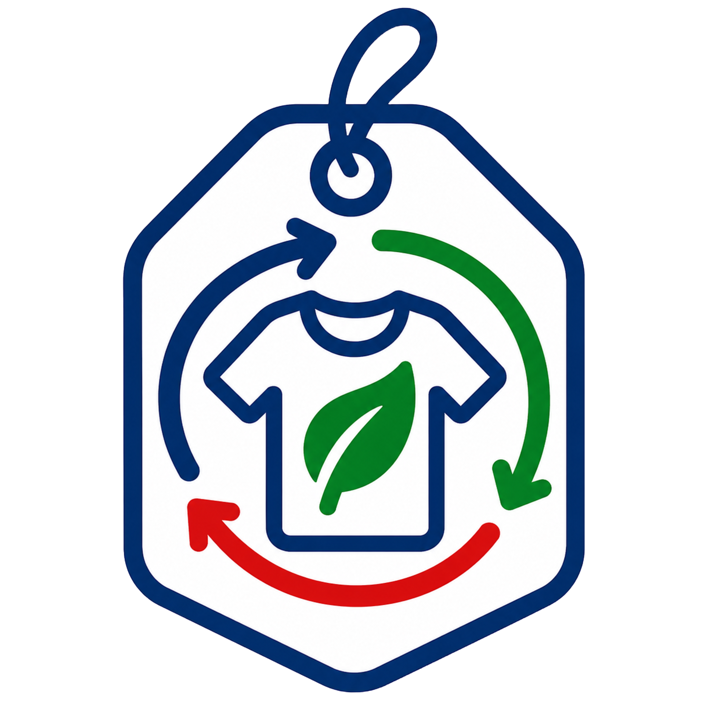

🧵
Composición textil
98% algodón + 2% spandex
Masa: 243 g
Conoce el impacto ambiental de tu prenda.
👖 Pantalón
EcoPass · PantalónInformación de la prenda
Estos datos forman parte del Pasaporte Ambiental de esta prenda.
98% algodón + 2% spandex
Masa: 243 g2.680 L
Agua estimada asociada a la prenda.4,91 kg CO₂e
Emisiones estimadas.2,95 años
Vida útil estimada.Predomina algodón; el spandex dificulta la degradación
Reparar → segunda mano → transformar en short → bolso → estuche → retazos textiles
Evaluación ambiental
Una evaluación sencilla para comunicar su nivel de impacto ambiental.
VERDE
Esta prenda pertenece al nivel VERDE según su EcoScore.
♻️ Pasaporte Ambiental
Desafío de esta prenda
Cada decisión sobre una prenda también es una decisión sobre sus recursos.